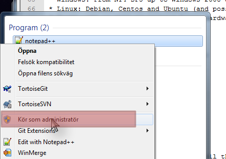

Tutorial
WARNING This is an old tutorial, and a better place to start is the Getting Started guide.
How it works

NSClient++ (nscp) is an agent that must be deployed on servers to be monitored. It eliminates snmp needs and goes much beyond "so called agentless" schemes like wmi by allowing execution of scripts and programs locally and returning results.
Note
This program is not designed to be used stand alone instead it is designed to be used in combination with a monitoring solution like Nagios/Icinga/Neteye/Op5. While NSClient++ was designed to be used with Nagios it aims to be open and as such supports many protocols so it can be integrated with various other monitoring solutions.
To facilitate NSClient++ support a series of protocols:
| Protocol | Paradigm | Comments |
|---|---|---|
| NRPE | Active | Protocol used by Nagios to speak with agent like NSClient++ |
| NSCA | Passive | Protocol used with Nagios so agent can speak to Nagios (reverse way of communication) |
| REST | Multiple | NSClient++ own protocol (still under development) |
| check_mk | Active | Protocol utilized by the check_mk monitoring system |
| Syslog | Passive | Protocol primarily designed for submitting log records |
| Graphite | Passive | Real-time graphing |
| Collectd | Passive | Real-time graphing |
| SMTP | Passive | Communicate with NSClient++ through mails. More of a toy currently |
In this document, we will cover NRPE and NSCA, as well as show how it is integrated with Nagios. If you have other protocols or monitoring solutions the general concepts can be easily adapted to any of the other supported protocols.
NSClient++ allows many ways to check your system:
- Get System health (cpu, disks...)
- Get performances counters
- Get WMI query
- Check Log file
- Check scheduled task
But you can also extend it with custom scripts:
- powershell scripts
- VB Scripts (.VBS)
- Executable files
- Batch (.BAT) files
Requirements
To use NSClient++ you need a monitoring system deployed in your network many people use Nagios, Icinga, Neteye or Op5 but strictly speaking NSClient++ is designed to work with any monitoring tool which can execute external scripts or support any of the standard protocols.
When it comes to Supported OSes NSClient++ was original design to run only on Windows but since 0.4.1 is can be used on Linux as well. But currently most modules are Windows only thus the benefit on other operating systems are limited.
Windows:
NSClient++ should run on the following operating systems:
- Windows: From NT4 SP5 up to Windows 2008 and Windows 7 and 2012
- Linux: Debian, Centos and Ubuntu (and possibly others as well)
- Win32, x64 as well as various Linux hardware as well.
Linux:
NSClient++ has official packages for:
- Debian
- Centos/Redhat
Configuration
Introduction
Before rushing on the binaries and install them, you must spend 15m in making the config file.
Danger
We do recommend that you do not skip this step, as you will have issues later and get frustrated... What is 15minutes compared to a great monitoring solution? If you still can't afford these 15 minutes, take the config example in this doc
One important thing to understand when it comes to NSClient++ configuration is that while most people use ini-files it is not the only possibility other options include registry and remote files. But for the reminder of this tutorial we only consider ini files since it is the normal and simplest way.
Editing
NSClient++ config file is in the well-known INI Format. To edit it you can use any text editor such as notepad. Using advanced editors such as notepad++ you can also achieve syntax coloring so that is preferable.

Also note that on Windows (after Vista) the ini file is residing in a protected space and thus you need to launch the editor as administrator to edit the files.
Sections
Like in all INI, section start with a name between "[]". The first section is [/modules].
In general NSClient++ has a hierarchical settings structure much like a file-system. This means that everything under /settings is related to settings and so on and so forth.
- Sections do not have an explicit end. When a new section start, the previous one end.
- Sections can be empty
- Sections generally starts with either (if they don't, you probably have an older version):
/modulesor/settings/
[/modules]
...
[/settings/...]
...
Comments
Comments are line starting by a semi-colon ";"
- This is a comment, which appears in green on notepad++. Colors helps me a lot!
Values
Values are in the following format: key = value
foo = bar ; Give foo the value bar
Configuring
To make you configuration you first need to decide which modules you want then and configure each one of them in turn. We will start the same why by presenting the various modules you can use and covering how to configure some of them.
Modules
Here are the available modules. Each module get loaded if enabled. You can enable all and use only one, but that may open doors for nothing and add load on your systems. There are a few ways you can enable modules, setting the value to 1, true and enabled are all correct but enabled is preferred like so:
[/modules]
NRPEServer = enabled
There is an advanced topic when it comes to modules and that is loading the same module multiple times. This is not common but since it changes the syntax we mention it for completion. When a module is loaded multiple times it is given an alias as a key (since key names have to be unique) and thus the syntax changes into this:
[/modules]
nrpe1 = NRPEServer
nrpe2 = NRPEServer
nrpe3 = NRPEServer
Note
Modules in bold below are commonly used with Nagios Nagios.
| Module | Has Config | Requires Config | Comment |
|---|---|---|---|
| CheckDisk | Can check various file and disk related things. The current version has commands to check Size of hard drives and directories | ||
| CheckEventLog | X | Check for errors and warnings in the event log. This is only supported through NRPE so if you plan to use only NSClient this won’t help you at all | |
| CheckExternalScripts | X | X | A simple wrapper to run external scripts and batch files |
| CheckHelpers | Various helper function to extend other checks. This is also only supported through NRPE | ||
| CheckLogFile | X | Check text files (usually log files) for patterns. | |
| CheckNSCP | Check the state of the agent | ||
| CheckSystem | X | Various system related checks, such as CPU load, process state, service state memory usage and PDH counters | |
| CheckTaskSched | Check states of scheduled tasks. Both module are exclusive (must choose one or the other). The second is only for Vista and upper (new task scheduler) | ||
| CheckWMI | Make WMI Query | ||
| DotnetPlugins | X | X | Plugin to load and manage plugins written in dot net |
| GraphiteClient | X | X | Act as a Graphite Client over Graphite protocol |
| LUAScript | X | X | Extend NSClient++ with internal Lua scripts. |
| NRDPClient | X | X | Act as a NRDP Client over NRDP protocol |
| NRPEClient | X | X | Act as a NRPE Client over NRPE protocol |
| NRPEServer | X | X | A simple server that listens for incoming NRPE connection and handles them. |
| NSCAClient | X | X | Passive check support over NSCA protocol |
| NSClientServer | X | X | A simple server that listens for incoming NSClient (check_nt) connection and handles them |
| PythonScript | X | X | Execute internal script written in Python (requires python 2.7 to be installed) |
| Scheduler | X | X | A scheduler which schedules checks at regular intervals |
| SimpleCache | Caches results for later checking | ||
| SimpleFileWriter | Write results to a file or pipe similar to NSCA |
Note
This is the only difficult part. You must tell NSClient++ how to behave for the modules you want it to run. We will cover here the most needed modules, which are in bold in previous chapter.
Default settings
If you omit some settings per protocol, default values will be used. Here are the recommended default value section:
[/settings/default]
allowed hosts = IP.OF.YOUR.MONITORING.HOST
cache allowed hosts = true
password = CHECK_NT PASSWORD
timeout = 90
Communication
As we stated initially NSClient++ by itself is not very useful. Thus you need to enable some form of communication with your central server.
Choosing a transport/protocol
NSClient++ supports several transports and you can use either one or several of these or you can create your own custom transport. Transports are methods which facilitates communication between Monitoring server and your server. You can look at this much like for instance HTTP (which you are using now) and FTP. They both support transferring files but they have slightly different approaches so things work differently but the end result is the same. A file gets transferred. In our case the end result is that a monitoring result gets submitted to Monitoring server.
- NSClient (check_nt) Old legacy protocol which only has some basic checks and is intended for backwards compatibility.
- NRPE (check_nrpe) The most commonly used way to use NSClient++. Most examples are intended to be used in this mode. Has some security and payload length issues.
- NSCA (nsca server)/NRDP (NRDP server) To enable passive monitoring you would use either NSCA or NRDP to have NSClient++ submit home monitoring results.
- REST The preferred and best way to communicate with NSClient++ as it is firewall and security friendly. This is a new protocol and can thus some times be a bit awkward to get on your monitoring server.
- Make your own The spirit of NSClient++ is to allow you do decide what you want to do so you can make any combination of the above and even use some other third party protocols or what not...
NRPE Server
Note
This module is used by the check_nrpe on Nagios.
Danger
Since the default check_nrpe command is very insecure (uses unreliable encryption) NSClient++ since 0.4.3 ships with this disabled. Thus it wont work with the legacy check_nrpe unless you enable the insecure mode
All you need to configure is who is allowed to connect as well how to handle arguments. For security reasons arguments are not allowed the idea is that a "dumb" monitoring agent is less dangerous then one which can be controlled remotely. The drawback to not allowing argument is that you need to configure everything in nsclient.ini on every single host which can obviously be cumbersome. The other option is to allow arguments but it is important to consider the security implications before doing so.
For a detailed guide on how to setup NRPE with NSClient++ step by step including debugging and testing see debugging nrpe.
A less restrictive configuration is shown here where we have allowed all kinds of arguments for simplicity.
Danger
This has security implications!
[/settings/NRPE/server]
allow arguments = true
allow nasty characters = true
;allowed hosts = IP.OF.YOUR.MONITORING.HOST
;port = 5666</p>
TODO: Add information about secure mode!
NSCA Client
Note
This is used by NSCA server on Nagios.
Another way to configure monitoring is to use what is commonly referred to as passive monitoring. This means that NSClient++ will periodically phone home when it has something to report much like SNMP traps. The main difference is that Nagios is just waiting for this information and so doesn't poll for them. This can avoid a lot of load by not polling for nothing. Load is also distributed on all hosts and not Nagios centric.
For a detailed guide on how to setup NSCA with NSClient++ step by step including debugging and testing see NSCA.
[/settings/NSCA/client]
channel = NSCA
hostname = auto
[/settings/NSCA/client/targets/default]
address = address = nsca://IP.OF.YOUR.MONITORING.HOST:5667
encryption= aes256
password = Password_Which_Must_Be_Identical_On_NSCA_Server_On_Nagios
timeout = 90
Checking things
TODO: Add information about basic checks here!
External scripts
Note
This allow to call arbitrary program/script through any protocol and get result back.
Using external script is the easiest way to extend NSClient++ and it. Alias allows you to shorten commands sent by preparing command line with both dynamics and static arguments.
For a detailed guide on how to setup External Scripts with NSClient++ step by step including debugging and testing see external scripts.
[/settings/external scripts]
allow arguments = true
allow nasty characters = true
timeout = 90
[/settings/external scripts/wrappings]
bat = scripts\\%SCRIPT% %ARGS%
ps1 = cmd /c echo scripts\\%SCRIPT% %ARGS%; exit($lastexitcode) | powershell.exe -command -
vbs = cscript.exe //T:90 //NoLogo scripts\\lib\\wrapper.vbs %SCRIPT% %ARGS%
exe = cmd /c %SCRIPT% %ARGS%
[/settings/external scripts/alias]
alias_cpu = checkCPU warn=80 crit=90 time=5m time=1m time=30s
alias_cpu_ex = checkCPU warn=$ARG1$ crit=$ARG2$ time=5m time=1m time=30s
; ...skipping lines as we do provide LOT of alias for you...
alias_updates = check_updates -warning 0 -critical 0
alias_volumes = CheckDriveSize MinWarn=10% MinCrit=5% CheckAll=volumes FilterType=FIXED
alias_volumes_loose = CheckDriveSize MinWarn=10% MinCrit=5% CheckAll=volumes FilterType=FIXED ignore-unreadable
[/settings/external scripts/scripts]
check_openmanage = scripts/check_openmanage.exe
[/settings/external scripts/wrapped scripts]
check_updates=check_updates.vbs $ARG1$ $ARG2$
Eventlogs
Note
Event-logs are a great source of information for monitoring. Allow real-time monitoring and extended filtering. As the subject itself is a bit complicated, start basic by grabbing all and exclude after.
check_eventlog
TODO: Extend this section
Installation
TODO: Add section about automating installs and central config
Security
Account running nsclient++
By default, the Windows service run as Local System. This is simple (no access denied issue), but may lead to security issue if a breach appears (in NSClient++ or in your scripts). As with others solutions, like Microsoft SCOM, you can restrict NSClient++ power by using a Windows account.
Needed right will depend on what you want to monitor, but as a basis, you will need an account: - Member of the local Windows group Performance Monitor Users. Needed to collect performance counters - Log on as a service grant. Granted when you set the account, but should be applied through GPO to remain consistent.
Power users group is a no go, it still there but does nothing on vista and upper. On XP and 2003, it nearly means admin right, which is contrary to the target.
Using a domain account is also useful for specific monitoring, like for SharePoint.
You can use Process monitor <http://technet.microsoft.com/en-us/sysinternals/bb896645.aspx> to get access denied logs.
Securing communication
Encryption depend heavily on which communication protocol you need. For NSCA, you will need a shared passphrase and a common encryption protocol (AES in our examples).
You can restrict hosts allowed to speak to NSClient++ from the config file. This add security to firewall rules, by also restricting access within the same network.
Other topics
Extending NSClient++
NSClient++ is designed to be open ended and allow you to customize it in any way you design thus extensibility is a core feature.
- ExternalScripts responds to queries and are executed by the operating system and the results are returned as-is. This is generally the simplest way to extend NSClient++ as you can utilize whatever infrastructure or skill set you already have.
- LuaScripts are internal scripts which runs inside NSClient++ and performs various tasks and/or responds to queries. This is the best option if you want to allow the script to run on any platform with as little infrastructure as possible.
- PythonScripts are internal scripts which runs inside NSClient++ and performs various tasks and/or responds to queries. Python is an easy and powerful language but it requires you to also install python which is often not possible on server hardware.
- .Net modules similar to Native modules below but written on the dot-net platform. This allows you to write components on top of the large dot-net ecosystem.
- Modules are native plugins which can extend NSClient++ in pretty much any way possible. This is probably the most complicated way but gives you the most power and control.